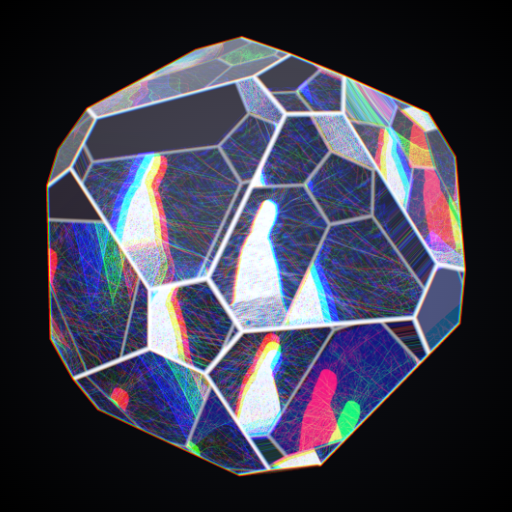

Aus einem Foto wird ein Film. Es zerfällt in Linien, Formen und Farben und setzt sich wieder zusammen. Oder es verwandelt sich: Funken verdichten sich zu einem Glaskörper, er zerspringt in Scherben, ihre Spuren ziehen als Echo durch einen Tunnel, daraus wird ein Gebirge. Oder die Kamera fliegt über die Formen des Fotos. Am Ende liegt immer dein Foto da.
Die Effekte lassen sich einzeln wählen oder frei kombinieren. Heraus kommt ein Video im Hochformat für Social Media.
- Drei Abläufe: Fragmente, Verwandlung, Relief-Flug
- Video (MP4) in 4 : 5 oder 9 : 16, dazu Standbilder
- Auf dem Startbildschirm, als eigenes Symbol; läuft nach dem ersten Öffnen auch ohne Netz
- Dein Foto bleibt auf dem Gerät